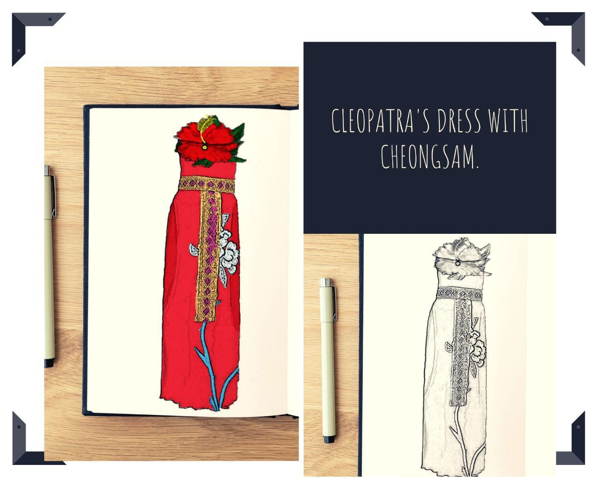
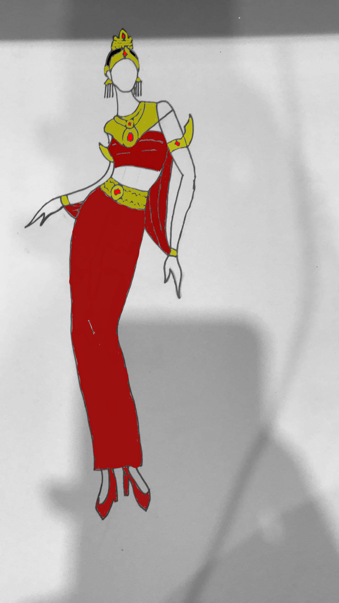
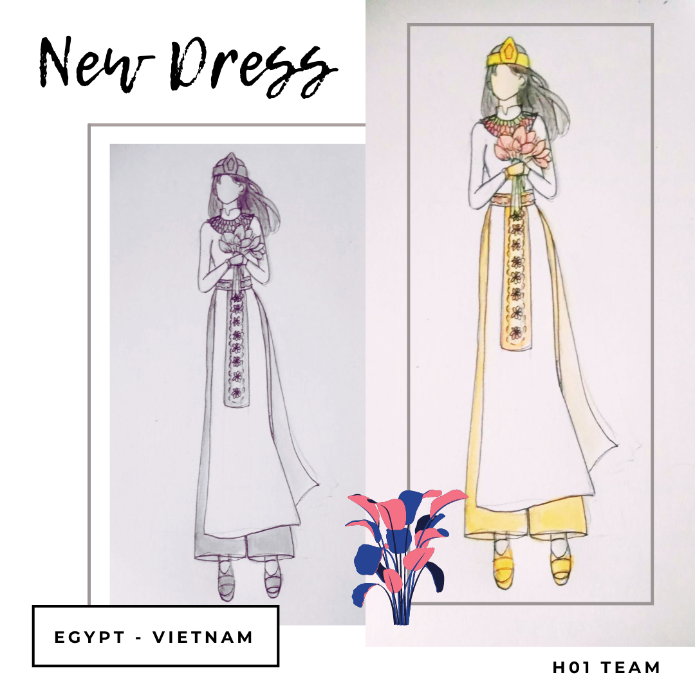

Dress Description:
Cheongsam is a traditional costume in Malaysia for the Chinese. The Cheongsam is a sheath dress with a high cylindrical collar, side slits, and an asymmetrical opening in the front that stretches from the middle of the collar to the armpit and down the side. The opening is traditionally secured with knotted buttons and loops known as Hua Niu (flower button). As you guys can see there is a flower on the top of the dress, it is called Hibiscus, the national flower in Malaysia. While Cleopatra's dress is a traditional costume in Egypt. Women in Ancient Egypt wore ankle-length sheath dresses made from linen, which were light and cool for the hot climate. The dress was draped over the body and tied or sewn to keep it in place. Formal clothes were more elaborate and detailed. Very rarely, there were clothes made of wool. We noticed that the Cheongsam and Cleopatra's dress would be an extraordinary match costume, as they are sheath dresses.

Dress Description:
This dress is designed by combining the Egyptian costume and ancient Thai costume. The pose of the woman in the picture is Cleopatra's pose. Most of the ancient Thai costume has jewelry and gold in it. The upper part is the combination between Egyptian and ancient Thai costume and the skirt is inspired by Thai costume. The skirt is narrow. The high heels is here just to add modern fashion into the costume. The earrings are from Egyptian costume. When we combine the Egyptian costume and Thai costume together, we see that if there's a lot of gold and there're red jewelries there, it would be beautiful and just to match the color of the costume with the jewelry we decided to use the dark red in the clothes part and the high heels.

Dress Description:
Our dress design is a combination of Egyptian and Vietnamese costumes. In the picture, there is a woman holding lotus flowers, one of the many symbols of Vietnam. She wears a dress with its upper part carrying Egyptian costume's characteristics and lower part inspired by traditional Vietnamese wide-leg pants. In this way, we believe that the dress can show the long history and the elegant beauty of people in both countries, especially the women.